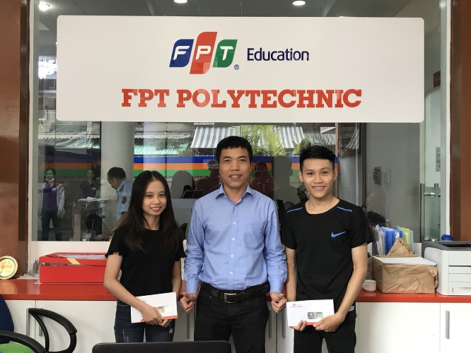
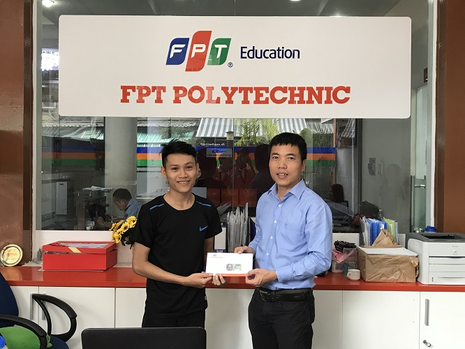
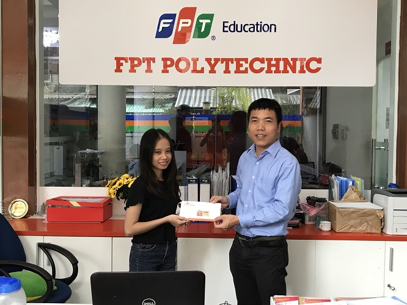

Không chỉ được lắng nghe và thực thi đóng góp vào thực tiễn, sinh viên Cao đẳng
FPT Polytechnic
Hồ
Chí Minh còn được nhận được phần thưởng xứng đáng với “Sáng
kiến sinh viên” của mình.
Qua cuộc thăm dò được đề xuất vào ngày 28/09/2018 trên trang fanpage Cộng đồng sinh viên FPT
Polytechnic, ý kiến “Đăng ký gửi xe tháng” và “Tổ chức tham quan doanh nghiệp cho K13.3” đã nhận
được bình chọn cao nhất của sinh viên. Ngày 04/10/2018 vừa qua, thầy Trần Vân Nam – Giám đốc Cao
đẳng FPT Polytechnic Hồ Chí Minh đã trao phần thưởng cho 2 sáng kiến mang tính ứng dụng cao này.
Tại Cao đẳng FPT Polytechnic, Ban Giám đốc luôn luôn lắng nghe ý kiến của sinh viên, nỗ lực hết mình
để nâng cao dịch vụ chất lượng cho sinh viên có môi trường học tập thoải mái và tốt nhất khi đang
học tập tại trường. Sinh viên Cao đẳng FPT Polytechnic được đưa ra ý kiến của mình về các hoạt động
triển khai trong học kỳ. Thông qua cuộc thăm dò ý kiến, Ban Giám đốc sẽ xem xét và lựa chọn ra ý
kiến phù hợp nhất để triển khai thực tế vào học kỳ. Qua cuộc thăm dò được đề xuất vào ngày
28/09/2018 trên trang fanpage Cộng đồng sinh viên FPT Polytechnic, ý kiến “Đăng ký gửi xe tháng” và
“Tổ chức tham quan doanh nghiệp cho K13.3” đã giành giải về ý kiến có lượt bình chọn cao nhất với
giá trị giải thưởng hấp dẫn là 500.000Đ và 300.000Đ.

Thầy Trần Vân Nam trao thưởng cho 2 sinh viên có ý kiến có số lượng bình chọn nhiều nhất
Với số lượt bình chọn cao nhất, ý kiến “Đăng ký gửi xe tháng” của bạn Trần Anh Hậu đã được chọn là
Giải Nhất. Nói về ý tưởng của mình, bạn Trần Anh Hậu chia sẻ: “Thật ra em nghĩ vấn đề gửi xe tháng
này khá lâu rồi. Sinh viên trường mình đi học hằng ngày nên việc gửi vé xe theo tháng hay theo chu
kì là khá thuận tiện. Có thể hạn chế mất thẻ hoặc vé trong quá trình đang học tại trường, quá trình
lấy vé ghi thẻ dễ mất tiền nữa. Lúc em đưa ra ý kiến thì cũng không nghĩ là sẽ được vote nhiều nhất
tại cũng rất nhiều ý tưởng hay hơn em nhiều. Nhưng khi thấy thầy Nam đưa ra kết quả thì khá bất ngờ
. Vừa vui cũng vừa buồn bởi chỉ bàn giao với mỗi cơ sở 2 trong khi đó em lại học cơ sở 1, em hi vọng
sau này trường sẽ bàn được cơ sở 1 để “ để tốn “ hơn. Em cũng xin cảm ơn trường đặc biệt thầy Nam
đưa ra bài vote khá hay. Hi vọng sau này nhiều các hoạt động vậy để sinh viên bày tỏ ý kiến nhiều
hơn”.

Bạn Trần Anh Hậu là sinh viên K14.1 ngành Lập trình máy tính hiện đang theo học tại FPT
Polytechnic Hồ Chí Minh
Xếp thứ nhì về số lượt bình chọn, bạn Trần Thị Tuyết Nhi đã giành Giải Nhì với ý kiến “Tổ chức tham
quan doanh nghiệp cho K13.3”. Chia sẻ về ý kiến của mình, bạn Trần Thị Tuyết Nhi nói: “Thật ra là ý
tưởng của em xuất phát từ nhu cầu cá nhân của em và tình trạng sinh viên học tại trường trong ngành
(digital marekting). Tuy nhiên sau đó em để ý thì thấy khóa 13.3 cũng chưa thấy có tổ chức đi tham
quan doanh nghiệp gì nhiều nên em đề xuất ý kiến đó. Thứ nhất: em thấy em và các bạn đều có một điểm
chung là còn khá về mơ hồ về định hướng sau này cho bản thân, cứ học thôi chứ chưa biết sau này mình
sẽ đi làm hay thích ở vị trí nào, nên em mới đề xuất đi tham quan để có thể hiểu trong từng ngành,
các công ty sẽ có vị trị như nào và như nào. Để không chỉ em và các bạn biết định hướng cho mình,
thấy mình mạnh cái nào thì dành thời gian cho nó nhiều hơn 1 chút chứ không đi lan man nữa. Và một
số bạn vẫn còn nghĩ đi làm tại doanh nghiệp nó sẽ màu hồng lắm nên em muốn các bạn có cơ hội được
trải nghiệm 1 phần nào đó ở các công ty, xem cách các anh chị làm việc, có thể cảm được 1 chút ít gì
đó về văn hóa của công ty này. Vì thiệt sự đi làm thì có hòa hợp được với văn hóa của công ty đó
không nó cũng rất quan trọng.”

Bạn sinh viên với dáng người nhỏ nhắn Trần Thị Tuyết Nhi
Thông qua chương trình “Sáng kiến sinh viên”, Ban tổ chức chương trình cũng rất mong muốn sẽ tiếp
nhận được thêm nhiều ý kiến đóng góp của sinh viên hơn nữa để cùng nhau xây dựng nên một môi trường
học tập hiệu quả nhất tại Cao đẳng thực hành FPT Polytechnic.